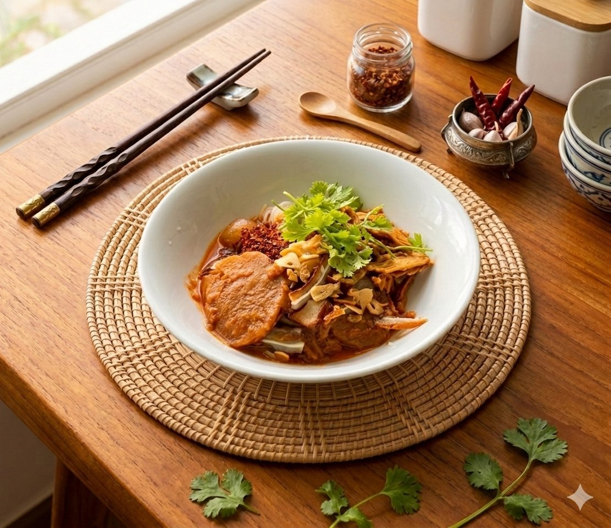

ထားဝယ်မုန့်ဟင်းခါး သည် အခြားဒေသများနှင့်မတူဘဲ ဟင်းရည်နှစ်မျိုး (အပျစ်အိုးနှင့် အကျဲအိုး) ကို ရောစပ်ပြီး စားသောက်ရသည့် ထူးခြားသော ထားဝယ်ရိုးရာ အစားအစာ တစ်ခု ဖြစ်ပါတယ်။ တစ်နည်းအားဖြင့် မုန့်လက်သုပ်ရည်နှင့်တွဲစားရသည်ကိုဆိုလိုသည်။ ထားဝယ်စကားဖြင့် မုန့်ဟင်းခါးကို (မုက္လွန်းဆီ) ဟု ခေါ်ပြီး မုန့်ဖတ်ကို (မုဗန်) ဟု ခေါ်ဆိုကြပါတယ်။အရသာရှိပြီး ပျစ်နှစ်စပ်မွှေးနေမယ့် ထားဝယ်မုန့်ဟင်းခါး ချက်ပြုတ်နည်း အဆင့်ဆင့်ကို အောက်တွင် အသေးစိတ် ဖော်ပြပေးလိုက်ပါတယ်။
ငှက်ပျောအူကို ပါးပါးလှီးပြီး နနွင်းရည်နဲ့စိမ်ထားပါ။ ပြီးရင် ငါးပြုတ်ရန်အတွက် အိုးထဲသို့ ချက်မည့်ငါးနှင့် နနွင်း ၊ စပါးလင် ထည့်ပြုတ်ပါ။ကျက်လျှင် အရိုးနွှင်ထားပေးပါ။
ငရုတ်သီးခြောက်ကို ဆုံထဲ ထည့်ထောင်းပါ။ အရောင်တင်မှုန့် အနည်းငယ်နှင့် ဂျင်း၊ ကြက်သွန်ဖြူပါ ထည့်ထောင်းပေးပါ။ ထိုနောက် ပုဇွန်ခြောက်ထည့်ချင်လျှင် ပုဇွန်ခြောက် ထောင်းပါ။ ကောက်ညှင်းမှုန့်နှင့် ပဲမှုန့် အနည်းငယ်ကို ရေနှင့်ဖျော်ထားပေးပါ။
အိုးထဲသို ဆီထည့်၊ ကြက်သွန်နီထည့်၍ နူးလာလျှင် ထောင်းထားသော ငရုတ်သီးအနှစ်ကို ဆီသတ်ပါ။ငပိ အနည်းငယ် ထည့်၍ သမအောင် ရောပေးပါ။ ထိုနောက် အရိုးနွှင်ထားသော ငါးကိုထည့်ပါ။ ငှက်ပျောအူထည့်ပြီး အချိန်အနည်းငယ် သမအောင် မွှေပေးပါ။ငှက်ပျောအူ ပျော့သွားအောင် အဖုံးဖုံး၍ ခဏ ဖုံးထားပါ။ ငှက်ပျောအူ ပျော့လာပါက ခုနားက ပြုတ်ထားသော ငါးပြုတ်ရည်ကို စစ်၍ ထည့်ပေးပါ။ကညင်ရွက် ထည့်ပြီး ရေကို လိုအပ်သလောက် ပမာဏ ထည့်ပေး၍ ဖုံးထားပါ။ နောက်ပြီး ပဲမှုန့်ရည်ကို ထည့်ပေးပါ။အရသာအတွက် အသားမှုန့်၊ ဆား၊ အချိုမှုန့်၊ သကြားအနည်းငယ် ထည့်ပေးပါ။အရသာ စိတ်ကြိုက်ပြင်ဆင်ပြီးလျှင်တော့ စားကောင်းတဲ့ ထားဝယ်ရိုးရာ မုန့်ဟင်းခါးလေး ရပါပြီ။
ပန်းကန်လုံးထဲသို့ မုန့်ဖတ် (မုဗန်) အနေတော် ထည့်ပါ။
ချက်ထားသော မုန့်ဟင်းခါးရည်ကိုထည့်ပါ(မုန့်လက်သုပ် ဟင်းရည်ကိုလည်း ရောနှော၍ စားသုံးနိုင်သည်။)
အပေါ်မှ နံနံပင်၊သံပရာသီး၊ငံပြာရည် အကြော်နှင့် ငရုတ်သီးမှုန့်တို ထည့်ပါ။
စပ်စပ်၊ ချဉ်ချဉ်၊ ပျစ်ပျစ်လေးနှင့် အရသာထူးကဲသော ထားဝယ်ရိုးရာ မုန့်ဟင်းခါးကို အရသာရှိစွာ သုံးဆောင်နိုင်ပါပြီ။
မှတ်ချက် - မုန့်လက်သုပ်ရည်နှင့် တွဲစားချင်ပါက မုန့်လက်သုပ်ရည်ချက်နည်းကိုလည်း ဖော်ပြထားကြောင်း အသိပေးအပ်ပါသည်။